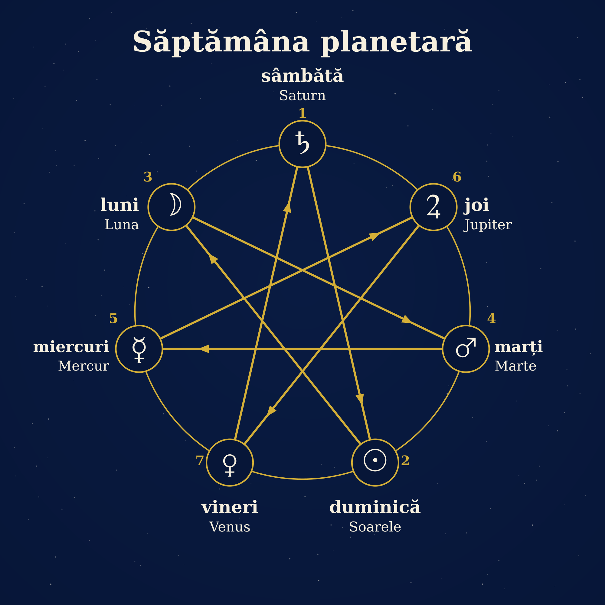
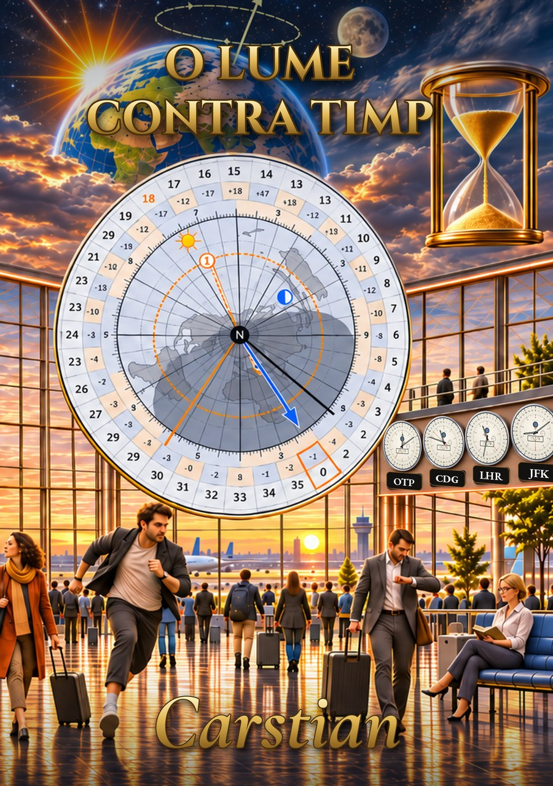

De ce se numesc zilele și lunile așa?
Calendarul TPU are săptămâni curate și luni de 28 de zile care încep luni. Numele pe care le dăm zilelor și lunilor vin însă dintr-un calendar mult mai vechi și ascund două ghicitori: de ce zilele vin în ordinea luni, marți, miercuri, și de ce decembrie, a 12-a lună, înseamnă „zece”.
De ce vin zilele săptămânii în această ordine?
Luni este ziua Lunii, marți a lui Marte, miercuri a lui Mercur, joi a lui Jupiter, vineri a lui Venus. Sunt cinci dintre cele șapte corpuri pe care anticii le vedeau mișcându-se printre stelele fixe. Celelalte două, Soarele și Saturn, se recunosc încă în engleză, în Sunday și Saturday.
Anticii cunoșteau o ordine a astrelor, de la cel mai lent la cel mai rapid pe cer: Saturn, Jupiter, Marte, Soarele, Venus, Mercur, Luna. Începând cu sâmbăta, săptămâna noastră este însă Saturn, Soarele, Luna, Marte, Mercur, Jupiter, Venus. Cele două șiruri nu seamănă, nici măcar răsturnate.
Răspunsul vine dintr-un calcul. Anticii dedicau astre nu numai zilelor, ci și orelor: se pornea cu prima oră a lui Saturn, a doua a lui Jupiter, a treia a lui Marte și tot așa, în ciclu, iar ziua primea numele astrului care conducea prima ei oră. Ziua are 24 de ore, iar astrele sunt șapte: 24 = 3 × 7 + 3 (după calculele noastre). După trei cicluri complete mai rămân trei ore, deci prima oră a zilei următoare cade cu trei poziții mai departe în șir. De fiecare dată se sare peste două astre și se cade pe al treilea: de la Saturn la Soare, de la Soare la Lună, apoi Marte, Mercur, Jupiter, Venus. Rezultă sâmbătă, duminică, luni, marți, miercuri, joi, vineri, exact ordinea pe care o știm.

Săptămâna planetară: cele șapte astre sunt așezate pe cerc în ordinea lor de la cel mai lent la cel mai rapid, în sensul acelor de ceasornic, începând cu Saturn, iar linia care le unește din trei în trei dă ordinea zilelor, de la sâmbătă (1) la vineri (7).
Nimeni nu a hotărât deci această ordine: ea a ieșit dintr-o împărțire cu rest. Steaua cu șapte colțuri este doar un mod de a vedea același calcul. Istoricul roman Dio Cassius, din secolul al III-lea, spune că obiceiul de a închina zilele celor șapte astre vine de la egipteni și că vechii greci nu l-au înțeles; el reține două explicații, una muzicală și una prin ore, și ambele duc la același pas de trei. Nu putem spune sigur dacă sistemul orelor a precedat numele zilelor sau a venit să le explice.
Două zile au fost însă rescrise. În română, sâmbătă vine din sabatul evreiesc (latinește sabbatum), iar duminică din dies dominica, „ziua Domnului”: acolo unde romanii aveau ziua Soarelui, creștinii au pus ziua Domnului. Engleza a ales invers: a păstrat numele Soarelui, Lunii și lui Saturn și a înlocuit patru zei romani cu zei germanici, de unde Tuesday sau Thursday. În 321, împăratul Constantin a făcut din ziua Soarelui zi de odihnă în tot imperiul; decretul îi spune însă tot ziua Soarelui, deci schimbarea numelui a venit treptat.
Săptămâna este deci o convenție veche, făcută din trei lucruri: cerul dă numele, aritmetica dă ordinea, iar religia a rescris două zile.
De ce decembrie, luna a 12-a, poartă un nume care înseamnă „zece”?
Septembrie, octombrie, noiembrie și decembrie vin din cuvintele latine pentru șapte, opt, nouă și zece, dar sunt luna a noua, a zecea, a unsprezecea și a douăsprezecea. Explicația este în tradiția romană: anul ar fi avut inițial zece luni și ar fi început în martie (așa îl prezintă și Ovidiu în Fastele, cu Marte prima lună și Venus a doua). Ianuarie și februarie ar fi fost adăugate ulterior, iar toate numerele s-au deplasat cu două poziții fără ca numele să se schimbe.
| Luna de azi | Cuvântul latin | Sensul | Poziția în anul de zece luni (din martie) | Poziția azi |
|---|---|---|---|---|
| iulie (Quintilis, apoi Iulius) | quintus | a cincea | 5 | 7 |
| august (Sextilis, apoi Augustus) | sextus | a șasea | 6 | 8 |
| septembrie | septem | șapte | 7 | 9 |
| octombrie | octo | opt | 8 | 10 |
| noiembrie | novem | nouă | 9 | 11 |
| decembrie | decem | zece | 10 | 12 |
Două dintre aceste luni și-au schimbat chiar numele. Luna a cincea (Quintilis) a primit numele lui Iulius Cezar în 44 î.Hr., după Macrobius printr-o lege propusă de Marcus Antonius, iar luna a șasea (Sextilis), pe al lui Augustus în 8 î.Hr., printr-o hotărâre a Senatului.
Mai circulă și o poveste: Augustus ar fi luat o zi din februarie ca luna lui să nu fie mai scurtă decât iulie. Textele antice pe care le-am citit nu o confirmă: Censorinus și Macrobius spun că Cezar a adăugat zile lunilor scurte, două lui ianuarie, august și decembrie și câte una celorlalte, iar Macrobius precizează că februarie nu a primit nicio zi; deci august avea 31 de zile încă de pe vremea lui Cezar. Sursele moderne nu sunt toate de acord, așa că rămâne o poveste fără sprijin într-o sursă antică.
Ce înseamnă asta pentru calendarul de 13 luni?
Calendarul TPU păstrează săptămâna de șapte zile și numele zilelor, dar îi dă un cadru curat: 13 luni de câte 28 de zile, adică exact patru săptămâni, fiecare lună începând luni. Lunile pot fi numite cu numere (luna 1 … luna 13), tocmai ca numele să nu mai rămână în urma pozițiilor, cum rămâne „decembrie” în urma locului său de a 12-a lună.
Săptămâna nu urmărește niciun ciclu din cer: este o convenție, dar una cu o istorie de aritmetică și de astre, iar acest lucru nu se pierde.
Mai mult în carte
Subiectul are două capitole în O lume contra timp, de Carstian: capitolul 11 (ziua săptămânii și steaua cu șapte colțuri) și capitolul 14 (lunile romane și numele lor), cu notele și sursele antice. Site-ul este un bonus al cărții: aici găsești schema, iar în carte găsești explicațiile.

Surse antice citite
Dio Cassius, Istoria romană, 37.18–19 · Ovidiu, Fastele, cărțile 1 și 3 · Censorinus, De die natali · Macrobius, Saturnalia, 1.12–14. Lista completă este în bibliografia cărții.